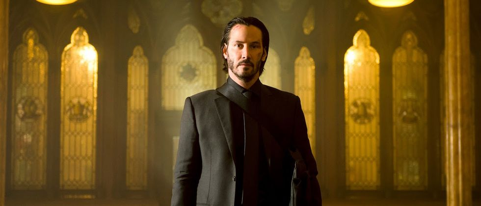

'JOHN WICK': EL ORDEN CRONOLÓGICO DE LAS PELÍCULAS Y SERIES DE LA SAGA
Los fans de Keanu Reeves, que no son pocos, están deseosos de volver a ver al intérprete esquivando balas y pegando buenos puñetazos. Pero... ¿en qué orden hay que ver las películas de 'John Wick'?
POR MANUEL D'OCON 27/03/2023

'John Wick 4' ha llegado por fin a las salas de cine. La cuarta película de la saga protagonizada por Keanu Reeves ya está dispuesta a conquistar a sus seguidores de nuevo, tanto como lo ha hecho a los profesionales (así lo demuestra la crítica de 'John Wick 4' en FOTOGRAMAS). No obstante, si eres nuevo en la franquicia, probablemente tengas muchas dudas y quieras ponerte al día para disfrutar de esta última cinta. Lo primero que debes saber es en qué orden ver las películas. En este caso, la tarea no es realmente complicada ya que el orden cronológico de las cintas de 'John Wick' es igual al de su fecha de estreno. Sin embargo, la duda está justificada, no sería la primera vez que una saga de películas juega con el orden en el que estrenan sus historias... (guiño, guiño, 'Star Wars', 'El Señor de los Anillos'...).
Todo comenzó hace casi una década, cuando la primera de las películas de 'John Wick' llegaba a las grandes pantallas de todo el mundo. Los fans de Keanu Reeves, que no son pocos, ya habían disfrutado del actor protagonizando otra de las mejores películas de acción de la historia: 'Matrix'; y estaban deseosos de volver a ver al intérprete esquivando balas y pegando buenos puñetazos. Y, qué decir... Recibieron lo que buscaban, eso seguro.
'John Wick' ha superado a Neo en lo que a batallas se refiere (sabemos que este comentario despertará la furia de algún que otro fan del actor, pero hay que reconocer que Wick sabe lo que se hace). Después de perder a su mujer, a causa de una grave enfermedad, ella le hace llegar un cachorro para que le sirva como motor para seguir adelante con su vida. Un lugar en el que enfocar su amor. Sin embargo, poco después de esto, un grupo de mafiosos llega a su hogar para robar su coche y, además de darle una brutal paliza, matan al animal.
Este detonante hará que John, antiguo sicario retirado, vuelva a las armas y emprenda un viaje de venganza para terminar con los responsables. Así arranca esta saga de películas de cine de acción, que ya ha conseguido generar hasta dos spin offs. Uno de ellos, la serie basada en el hotel 'The Continental', que es fundamental en la historia (no entraremos en spoilers) y que llegará a Amazon Prime Video a finales de 2023; y la película 'Ballerina', protagonizada por Ana de Armas, que no dispone de una fecha oficial de estreno, pero que podemos esperar que llegue en 2024. La primera semilla de esta historia fue plantada en 'John Wick: Parabellum', el tercer capítulo de la saga.
Después de su primer fin de semana en salas, ya sabemos que este cuarto episodio ha sido todo un bombazo. 'John Wick 4' ha batido récords en taquilla y Keanu Reeves se ha superado a sí mismo. Si ya te has puesto al día con la saga y quieres comprender hasta el último detalle de su clausura, no te pierdas el final explicado de 'John Wick 4' que hemos preparado para ti. ¿Qué te ha parecido la escena post-créditos de 'John Wick 4'?¿Crees que ha dejado un camino abierto para que lleguemos a ver 'John Wick 5'? La esperanza es lo último que se pierde...
Pero no esperes más, adéntrate de lleno en el mundo de 'John Wick' y descubre el orden cronológico en el que han transcurrido las películas. (Después, si te pica la curiosidad, puedes disfrutar de las tres primeras en streaming en HBO Max)
1 'El Continental' (Aún por estrenar)
David LeeUniversal
Antes de todos los eventos sucedidos en la saga de 'John Wick', ya estaba 'El Continental', el clásico hotel neoyorkino que da cobijo a todos los sicarios que deseen un lugar en el que descansar, después de haber realizado sus "habituales" tareas.
En 'El Continental', una miniserie que llegará a España a través de Amazon Prime Video, conoceremos su pasado. Concretamente, viajaremos a 1975, donde conoceremos al personaje interpretado por Ian McShane en su juventud, Winston Scott.
Los detalles más específicos de la trama aún se desconocen, pero sabemos que es probable que llegue a nuestras pantallas a finales de este año.
2 'John Wick (Otro día para matar)' (2014)
Lionsgate
La película con la que comenzó todo... En 'John Wick' conocemos la historia de nuestro protagonista, un sicario retirado, que regresa a Nueva York para vengarse de una banda de gángsters que le han arrebatado todo en la vida, y con los que antaño había trabajado codo con codo.
Keanu Reeves comenzó su andadura en la piel de este imbatible guerrero en 2014, y lo hizo para quedarse. Su viaje de venganza ha cautivado a grandes audiencias a lo largo y ancho del mundo, convirtiéndose en un imprescindible dentro del cine de este género.
3 'John Wick - Capítulo 2' (2017)

Lionsgate
Tres años después del estreno de la primera película de la saga, llegó a los cines el segundo capítulo de 'John Wick'. De nuevo, el sicario debe abandonar su retiro para retomar la acción, al descubrir que un antiguo compañero busca hacerse con el control de una enigmática organización internacional de asesinos.
Debido a un juramento de sangre que le une a su excolega, John se embarca en un trepidante viaje a Roma, enfrentándose a algunos de los sicarios más letales del mundo. La adrenalina y la emoción están aseguradas en esta intensa lucha por el poder.
4 'John Wick - Capítulo 3: Parabellum' (2019)

Lionsgate
En el penúltimo estreno de la saga, nuestro protagonista se encuentra en una situación más peligrosa que ninguna de las anteriores. Una recompensa de 14 millones de dólares se cierne sobre su cabeza y todo un ejército de mercenarios está dispuesto a atraparlo.
Todo comienza cuando John mata a uno de los miembros de la organización de asesinos a la que pertenecía. Esto provoca su expulsión definitiva de la institución y, a raíz de esto, se convierte en el objetivo de múltiples asesinos a sueldo que lo perseguirán por cada esquina, esperando su oportunidad para acabar con él.
Una batalla épica llena de acción, suspense y adrenalina, que nos conduce directamente hasta el estreno del fin de semana, 'John Wick 4'.
5 'Ballerina' (Aún por estrenar)
Lionsgate
Después de haber conocido, en 'John Wick 3', a la Ruska Roma, la organización criminal liderada por 'La Directora' (Anjelica Huston), llegará este capítulo intermedio en la saga, protagonizado por Ana de Armas.
En 'Ballerina' seguiremos la historia de venganza de una joven (entrenada para ser una asesina desde niña), que ha perdido a toda su familia.
A pesar de que la cinta se centrará de lleno en el personaje de Ana de Armas, podemos esperar ver a Reeves encarnando su personaje habitual.
6 'John Wick - Capítulo 4' (2023)
Lionsgate
John Wick ha vuelto. En esta ocasión, es su insaciable sed de venganza lo que le mueve a volver a la acción.
¿A quién se tendrá que enfrentar esta vez? Como ocurría en los casos anteriores, una gran cantidad de asesinos sedientos de sangre está pisándole los talones.
John deberá demostrar (una vez más) su habilidad y destreza si quiere sobrevivir a esta lucha sin cuartel. En esta ocasión, se enfrentará al villano de Bill Skarsgård, el Marqués de Gramont, que se ha decidido a acabar con su vida de una vez por todas.